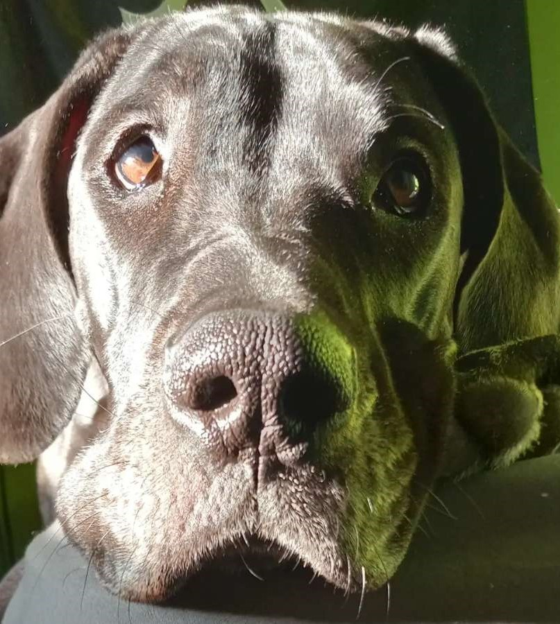
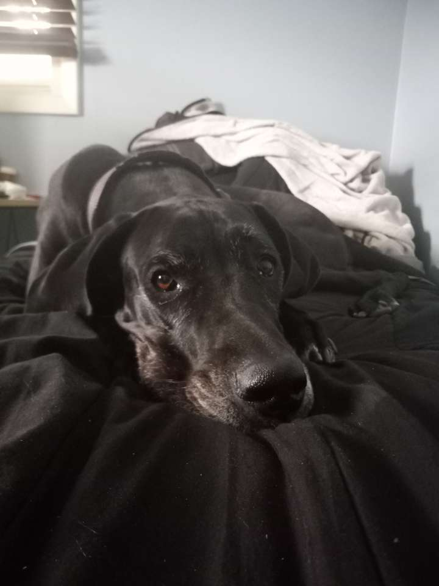

Lady is my Great Dane, and she’s such a special part of our family! She was born on January 27th, making her five years old now. We brought her home in March 2019, and she has been a big bundle of joy ever since. Lady has sleek black fur and warm brown eyes that always seem to be smiling. She’s usually well-behaved, though she has her mischievous moments! Lady is pretty clingy and loves being around us all the time, which is just fine because we love spoiling her with all the treats and cuddles. She really is the best companion!


